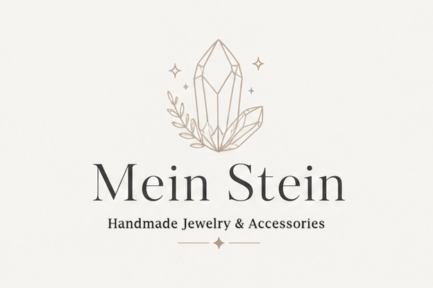
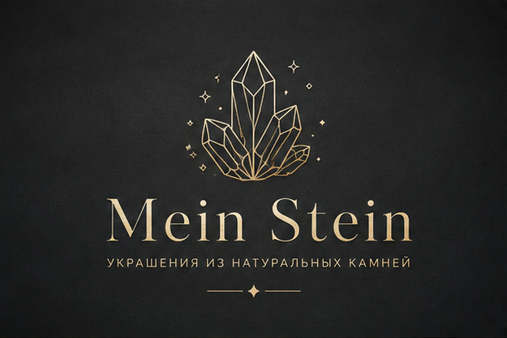
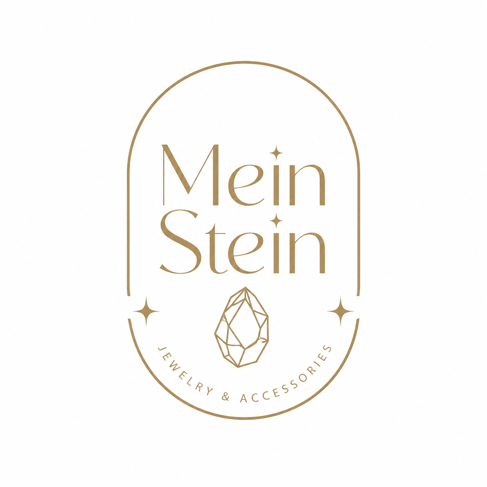
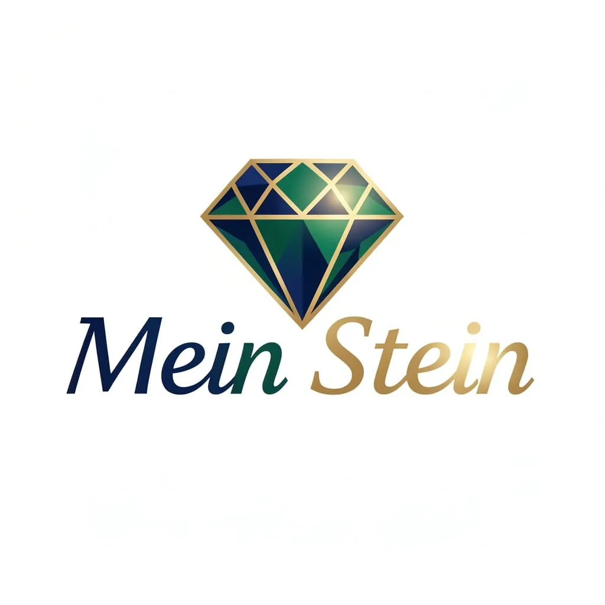
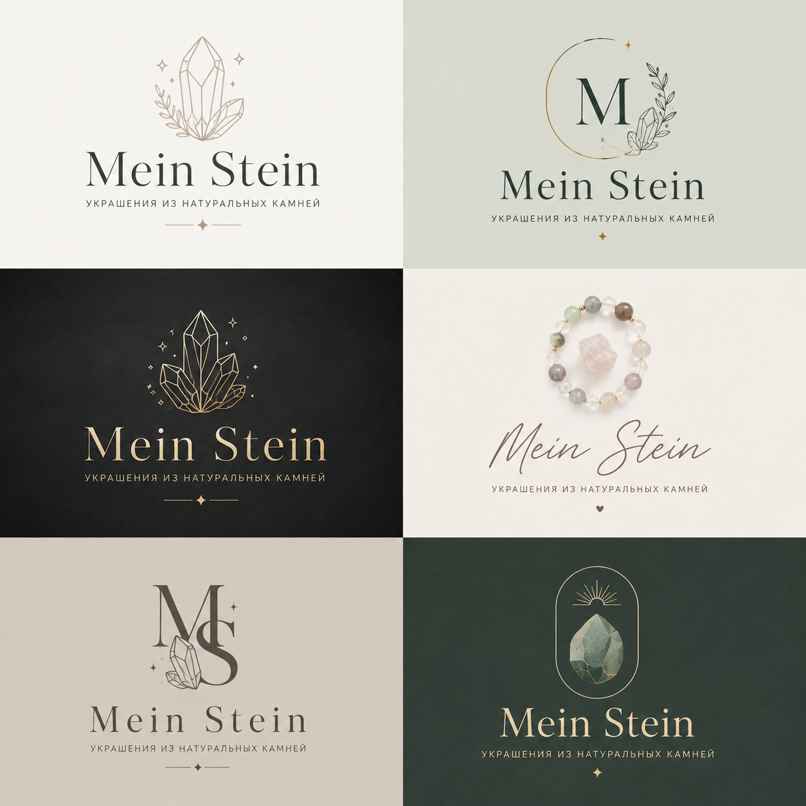

Site name
Mein Stein
Purpose
This website provides general information about the handmade jewelry and accessories made by Marina Kreibring. The goal of the site is to invite new customers to explore our unique collection and buy handmade pieces.
Project Description
I will design and build an e-commerce website for my small handmade jewelry business that I run with my daughter. The website will showcase our products — including earrings, bracelets, chokers, and other gemstone accessories — and allow customers to browse, learn about the materials, and place orders. The project will include planning, design, development, product photography, content creation, and publishing the site.
Expected Outcomes
Apply web development and e-commerce design principles. Learn about small-business branding, online product presentation, and basic marketing. Build a working prototype or live version of a real-world project that supports our family business. Document the full process (from concept to launch) to demonstrate professional project management skills.
Proposed stack
- Frontend: React + TypeScript
- Backend: ASP.NET Core Web API
- Database: PostgreSQL or SQL Server
- ORM: Entity Framework Core
- Styling: Tailwind CSS
- Version control: Git + GitHub
Branding
For the logo I could use one of these images:




